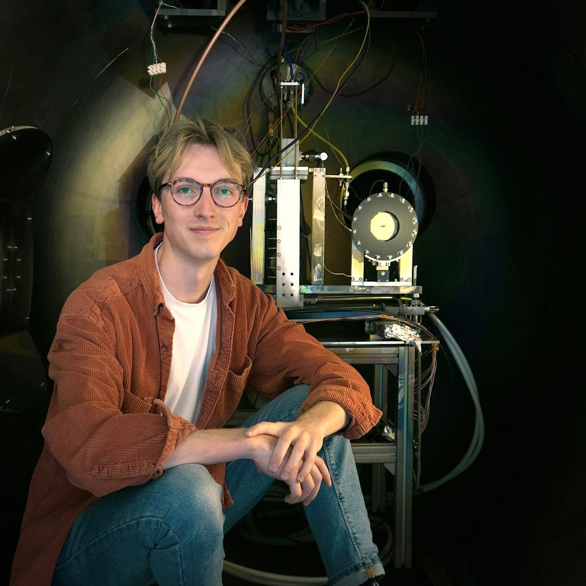
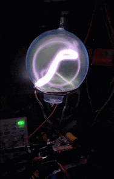
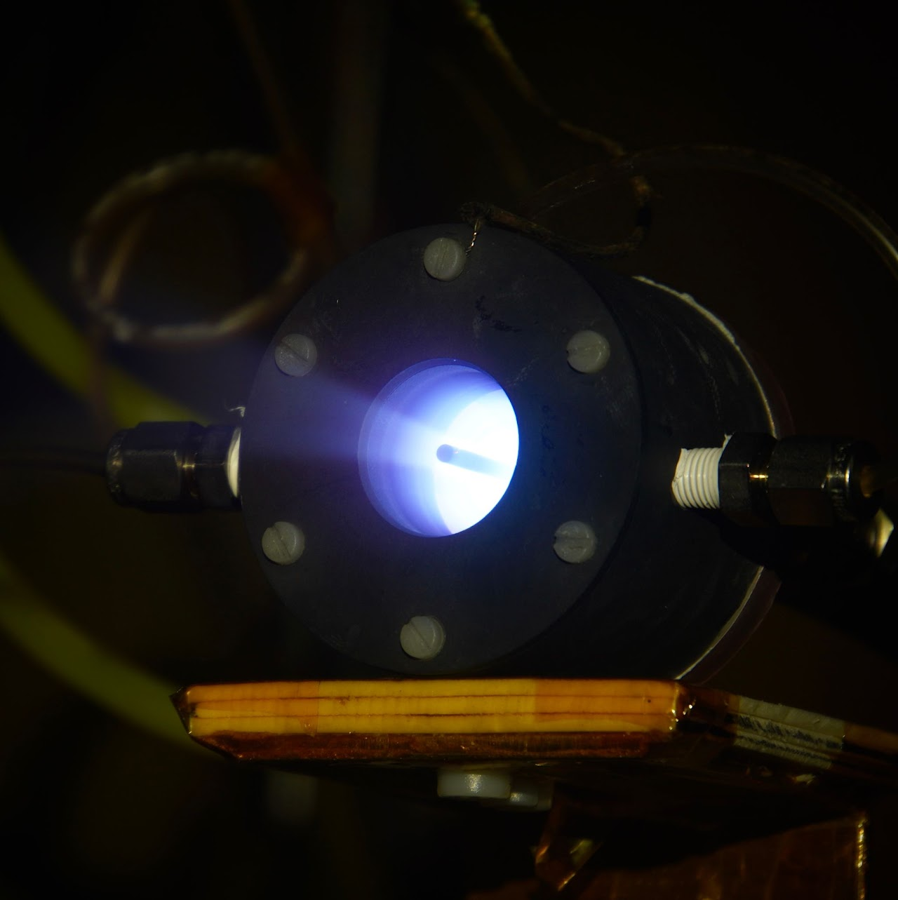
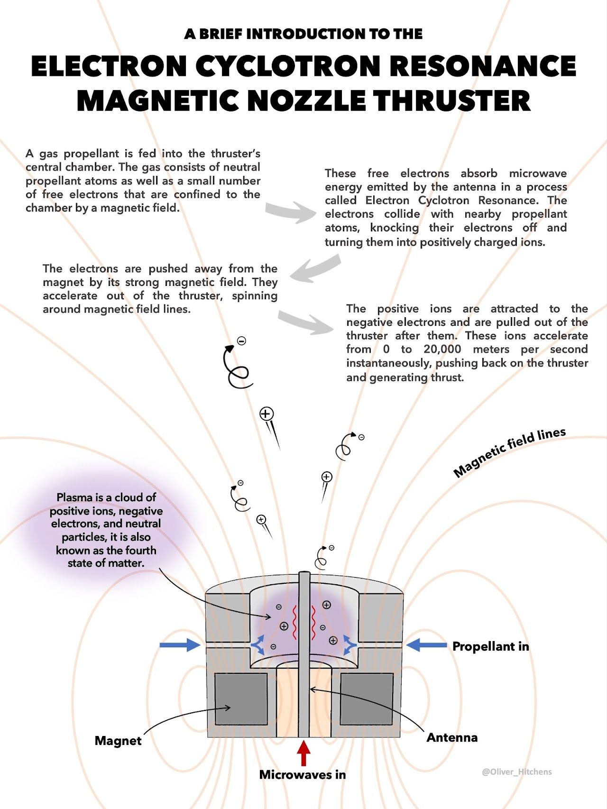
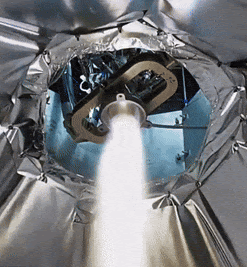
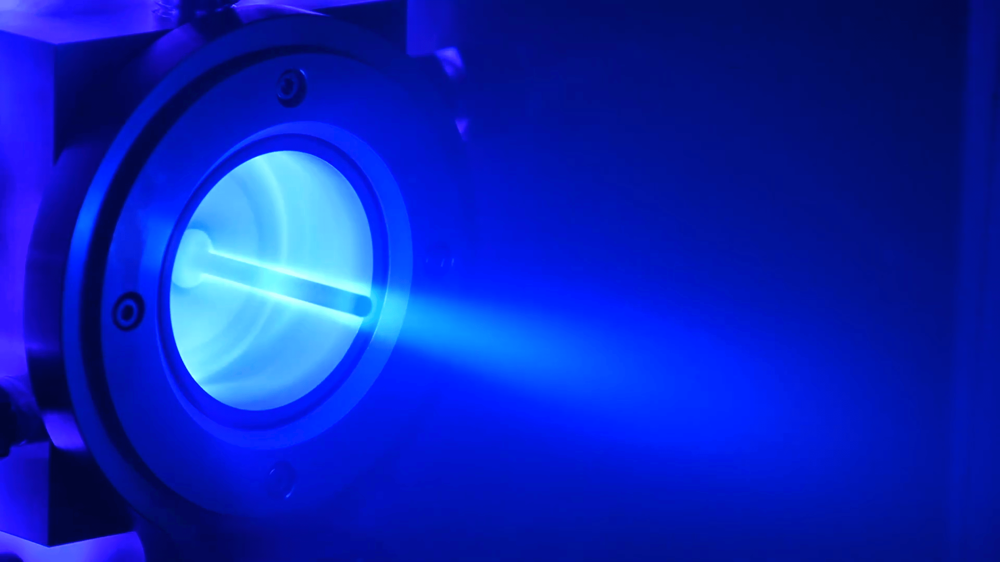

Engineering Projects
Hello, I'm Ollie and this is where I share a selection of my engineering projects from over the years. Take a look around!

Links: LinkedIn · ResearchGate · ORCID · X
GAUSS (Rocket Lab)
Key member of the team developing an in-house hall-effect thruster. Lead Test Engineer - Hall-Effect Thrusters. Responsible Engineer - Hall-Effect Thruster Vacuum Test Facility.
Significant design contributions to the development of Rocket Lab's GAUSS thruster, a magnetically shielded hall-effect thruster with a coaxial heaterless hollow cathode.

PhD Viva Presentation
Recording of my PhD viva open presentation "Performance Increase of Electron Cyclotron Resonance Magnetic Nozzle Thruster Via Magnetically Thickened Resonance Region".
Large ECR Thruster (PhD Project)
Developed an Electron Cyclotron Resonance (ECR) Magnetic Nozzle thruster. Found a novel method for increasing thrust and efficiency.
Plasma Toroid (Personal Project)

Small ECR Thruster (PhD Project)
Investigated effects of magnetic field strength gradient on electron power absorption.


Rocket Engine Test Rig (Internship)
Developed and operated the test rig for Rocket Factory Augsburg’s liquid NM-N2O cryogenic pressure-fed kick stage rocket engine.

AQUAJET (PhD Project)
Worked with AVS-UK Ltd. as a test engineer on the AQUAJET thruster.
